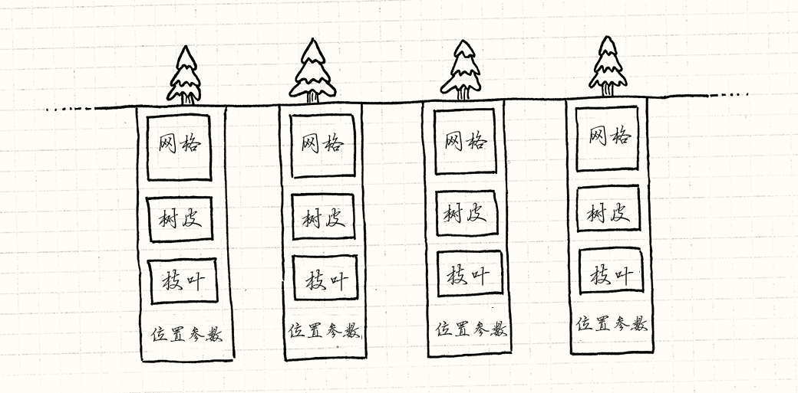
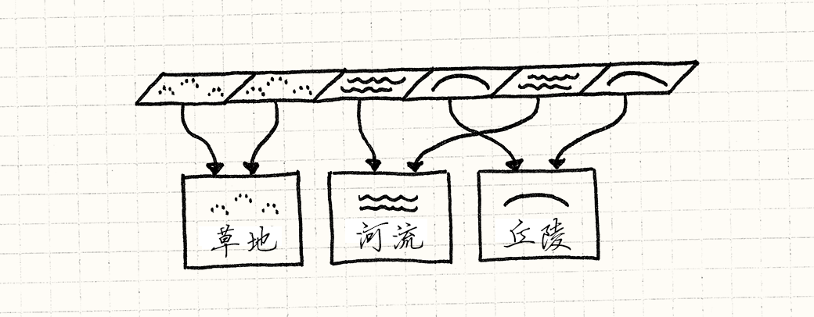

享元模式
游戏设计模式Design Patterns Revisited
迷雾散尽，露出了古朴庄严的森林。古老的铁杉，在头顶编成绿色穹顶。 阳光在树叶间破碎成金色顶棚。从树干间远眺，远处的森林渐渐隐去。
这是我们游戏开发者梦想的超凡场景，这样的场景通常由一个模式支撑着，它的名字低调至极：享元模式。
森林
用几句话就能描述一片巨大的森林，但是在实时游戏中做这件事就完全是另外一件事了。 当屏幕上需要显示一整个森林时，图形程序员看到的是每秒需要送到GPU六十次的百万多边形。
我们讨论的是成千上万的树，每棵都由上千的多边形组成。 就算有足够的内存描述森林，渲染的过程中，CPU到GPU的部分也太过繁忙了。
每棵树都有一系列与之相关的位：
- 定义树干，树枝和树叶形状的多边形网格。
- 树皮和树叶的纹理。
- 在森林中树的位置和朝向。
- 大小和色彩之类的调节参数，让每棵树都看起来与众不同。
如果用代码表示，那么会得到这样的东西：
class Tree { private: Mesh mesh_; Texture bark_; Texture leaves_; Vector position_; double height_; double thickness_; Color barkTint_; Color leafTint_; };
这是一大堆数据，多边形网格和纹理体积非常大。 描述整个森林的对象在一帧的时间就交给GPU是太过了。 幸运的是，有一种老办法来处理它。
关键点在于，哪怕森林里有千千万万的树，它们大多数长得一模一样。 它们使用了相同的网格和纹理。 这意味着这些树的实例的大部分字段是一样的。

我们可以通过显式将对象切为两部分来更加明确地模拟。 第一，将树共有的数据拿出来分离到另一个类中：
class TreeModel { private: Mesh mesh_; Texture bark_; Texture leaves_; };
游戏只需要一个这种类，
因为没有必要在内存中把相同的网格和纹理重复一千遍。
每个游戏世界中树的实例只需有一个对这个共享TreeModel的引用。
留在Tree中的是那些实例相关的数据：
class Tree { private: TreeModel* model_; Vector position_; double height_; double thickness_; Color barkTint_; Color leafTint_; };
你可以将其想象成这样：

把所有的东西都存在主存里没什么问题，但是这对渲染也毫无帮助。 在森林到屏幕上之前，它得先到GPU。我们需要用显卡可以识别的方式共享数据。
一千个实例
为了减少需要推送到GPU的数据量，我们想把共享的数据——TreeModel——只发送一次。
然后，我们分别发送每个树独特的数据——位置，颜色，大小。
最后，我们告诉GPU，“使用同一模型渲染每个实例”。
幸运的是，今日的图形接口和显卡正好支持这一点。 这些细节繁琐且超出了这部书的范围，但是Direct3D和OpenGL都可以做实例渲染。
在这些API中，你需要提供两部分数据流。 第一部分是一块需要渲染多次的共同数据——在例子中是树的网格和纹理。 第二部分是实例的列表以及绘制第一部分时需要使用的参数。 然后调用一次渲染，绘制整个森林。
享元模式
好了，我们已经看了一个具体的例子，下面我介绍模式的通用部分。 享元，就像它名字暗示的那样， 当你需要共享类时使用，通常是因为你有太多这种类了。
实例渲染时，每棵树通过总线送到GPU消耗的更多的是时间而非内存，但是基本要点是一样的。
这个模式通过将对象的数据分为两种来解决这个问题。 第一种数据没有特定指明是哪个对象的实例，因此可以在它们间分享。 Gof称之为固有状态，但是我更喜欢将其视为“上下文无关”部分。 在这里的例子中，是树的网格和纹理。
数据的剩余部分是变化状态，那些每个实例独一无二的东西。 在这个例子中，是每棵树的位置，拉伸和颜色。 就像这里的示例代码块一样，这种模式通过在每个对象出现时共享一份固有状态，来节约内存。
就目前而言，这看上去像是基础的资源共享，很难被称为一种模式。
部分原因是在这个例子中，我们可以为共享状态划出一个清晰的身份：TreeModel。
我发现，当共享对象没有有效定义的实体时，使用这种模式就不那么明显（使用它也就越发显得精明）。 在那些情况下，这看上去是一个对象同时被魔术般的分配到了多个地方。 让我展示给你另外一个例子。
扎根之所
这些树长出来的地方也需要在游戏中表示。 这里可能有草，泥土，丘陵，湖泊，河流，以及其它任何你可以想到的地形。 我们基于区块建立地表：世界的表面被划分为由微小区块组成的巨大网格。 每个区块都由一种地形覆盖。
每种地形类型都有一系列特性会影响游戏玩法：
- 决定了玩家能够多快的穿过它的移动开销。
- 表明能否用船穿过的水域标识。
- 用来渲染它的纹理。
因为我们游戏程序员偏执于效率，我们不会在每个区块中保存这些状态。 相反，一个通用的方式是为每种地形使用一个枚举。
enum Terrain { TERRAIN_GRASS, TERRAIN_HILL, TERRAIN_RIVER // 其他地形 };
然后，世界管理巨大的网格：
class World { private: Terrain tiles_[WIDTH][HEIGHT]; };
为了获得区块的实际有用的数据，我们做了一些这样的事情：
int World::getMovementCost(int x, int y) { switch (tiles_[x][y]) { case TERRAIN_GRASS: return 1; case TERRAIN_HILL: return 3; case TERRAIN_RIVER: return 2; // 其他地形…… } } bool World::isWater(int x, int y) { switch (tiles_[x][y]) { case TERRAIN_GRASS: return false; case TERRAIN_HILL: return false; case TERRAIN_RIVER: return true; // 其他地形…… } }
你知道我的意思了。这可行，但是我觉得很丑。 移动开销和水域标识是区块的数据，但这里它们散布在代码中。 更糟的是，简单地形的数据被众多方法拆开了。 如果能够将这些包裹起来就好了。毕竟，那是我们设计对象的目的。
如果我们有实际的地形类就好了，像这样：
class Terrain { public: Terrain(int movementCost, bool isWater, Texture texture) : movementCost_(movementCost), isWater_(isWater), texture_(texture) {} int getMovementCost() const { return movementCost_; } bool isWater() const { return isWater_; } const Texture& getTexture() const { return texture_; } private: int movementCost_; bool isWater_; Texture texture_; };
但是我们不想为每个区块都保存一个实例。 如果你看看这个类里面，你会发现里面实际上什么也没有， 唯一特别的是区块在哪里。 用享元的术语讲，区块的所有状态都是“固有的”或者说“上下文无关的”。
鉴于此，我们没有必要保存多个同种地形类型。
地面上的草区块两两无异。
我们不用地形区块对象枚举构成世界网格，而是用Terrain对象指针组成网格：
class World { private: Terrain* tiles_[WIDTH][HEIGHT]; // 其他代码…… };
每个相同地形的区块会指向相同的地形实例。

由于地形实例在很多地方使用，如果你想要动态分配，它们的生命周期会有点复杂。 因此，我们直接在游戏世界中存储它们。
class World { public: World() : grassTerrain_(1, false, GRASS_TEXTURE), hillTerrain_(3, false, HILL_TEXTURE), riverTerrain_(2, true, RIVER_TEXTURE) {} private: Terrain grassTerrain_; Terrain hillTerrain_; Terrain riverTerrain_; // 其他代码…… };
然后我们可以像这样来描绘地面：
void World::generateTerrain() { // 将地面填满草皮. for (int x = 0; x < WIDTH; x++) { for (int y = 0; y < HEIGHT; y++) { // 加入一些丘陵 if (random(10) == 0) { tiles_[x][y] = &hillTerrain_; } else { tiles_[x][y] = &grassTerrain_; } } } // 放置河流 int x = random(WIDTH); for (int y = 0; y < HEIGHT; y++) { tiles_[x][y] = &riverTerrain_; } }
现在不需要World中的方法来接触地形属性，我们可以直接暴露出Terrain对象。
const Terrain& World::getTile(int x, int y) const { return *tiles_[x][y]; }
用这种方式，World不再与各种地形的细节耦合。
如果你想要某一区块的属性，可直接从那个对象获得：
int cost = world.getTile(2, 3).getMovementCost();
我们回到了操作实体对象的API，几乎没有额外开销——指针通常不比枚举大。
性能如何？
我在这里说几乎，是因为性能偏执狂肯定会想要知道它和枚举比起来如何。 通过解引用指针获取地形需要一次间接跳转。 为了获得移动开销这样的地形数据，你首先需要跟着网格中的指针找到地形对象， 然后再找到移动开销。跟踪这样的指针会导致缓存不命中，降低运行速度。
就像往常一样，优化的金科玉律是需求优先。 现代计算机硬件过于复杂，性能只是游戏的一个考虑方面。 在我这章做的测试中，享元较枚举没有什么性能的优势。 享元实际上明显更快。但是这完全取决于内存中的事物是如何排列的。
我可以自信使用享元对象而不会搞到不可收拾。 它给了你面向对象的优势，而且没有产生一堆对象。 如果你创建了一个枚举，又在它上面做了很多分支跳转，考虑一下这个模式吧。 如果你担心性能，在把代码编程为难以维护的风格之前，至少先做些性能分析。
参见
- 在区块的例子中，我们只是为每种地形创建一个实例然后存储在
World中。 这也许能更好找到和重用这些实例。 但是在多数情况下，你不会在一开始就创建所有享元。
如果你不能预料哪些是实际上需要的，最好在需要时才创建。 为了保持共享的优势，当你需要一个时，首先看看是否已经创建了一个相同的实例。 如果确实如此，那么只需返回那个实例。
这通常意味需要将构造函数封装在查询对象是否存在的接口之后。 像这样隐藏构造指令是工厂方法的一个例子。